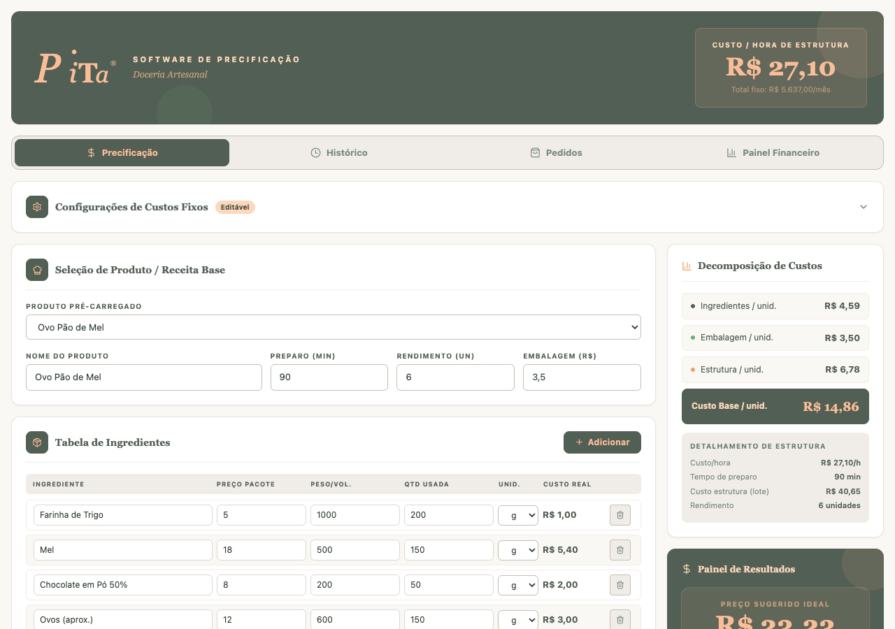
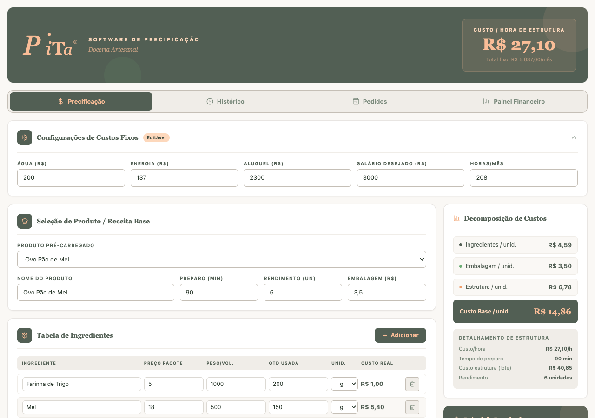
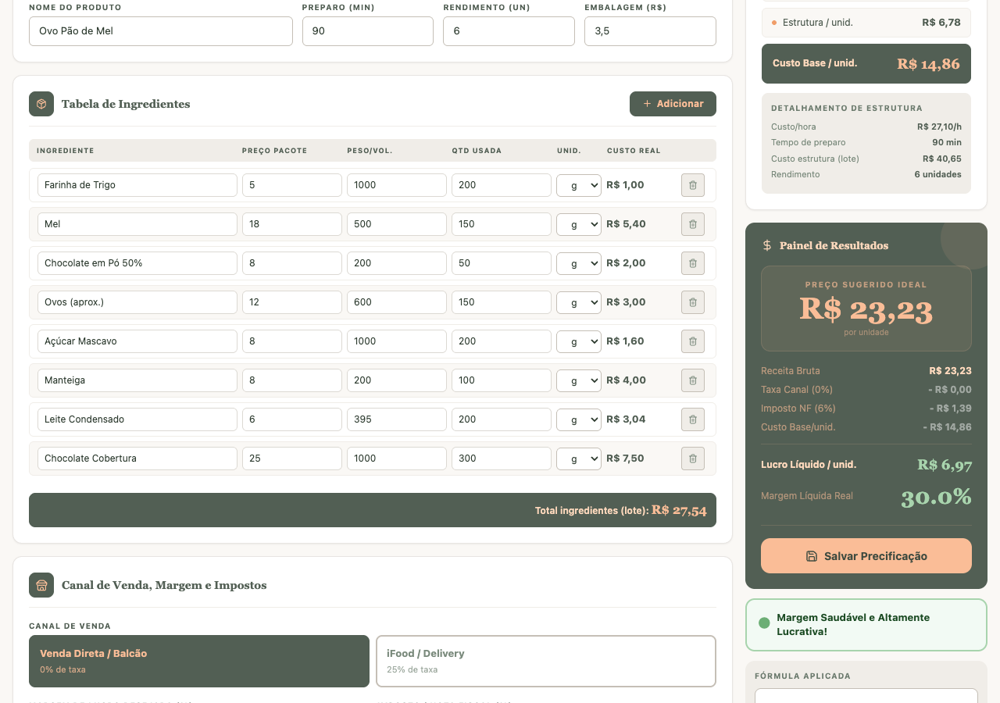
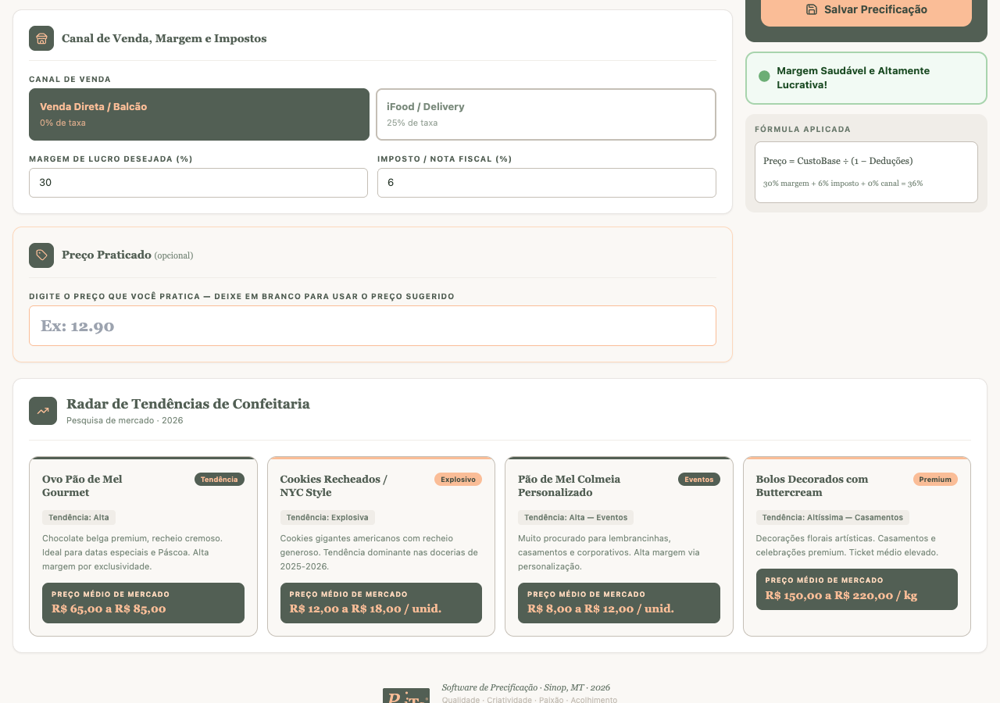
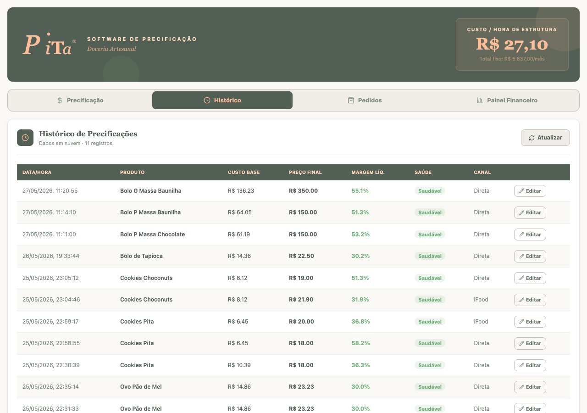
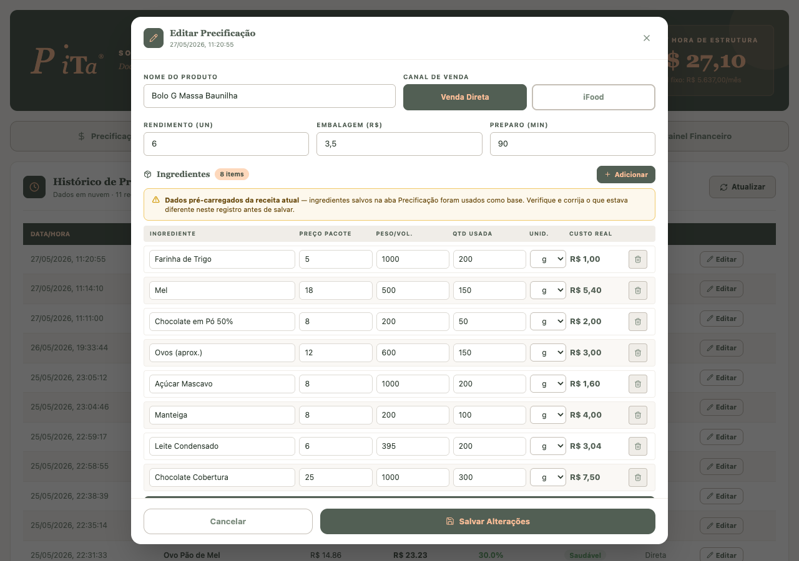
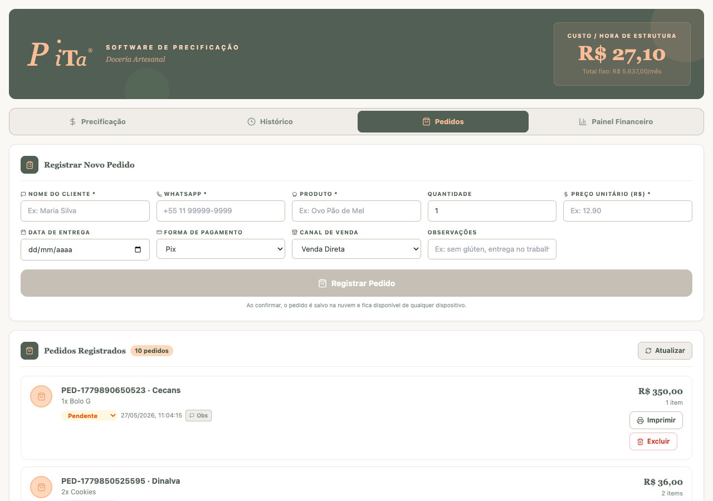
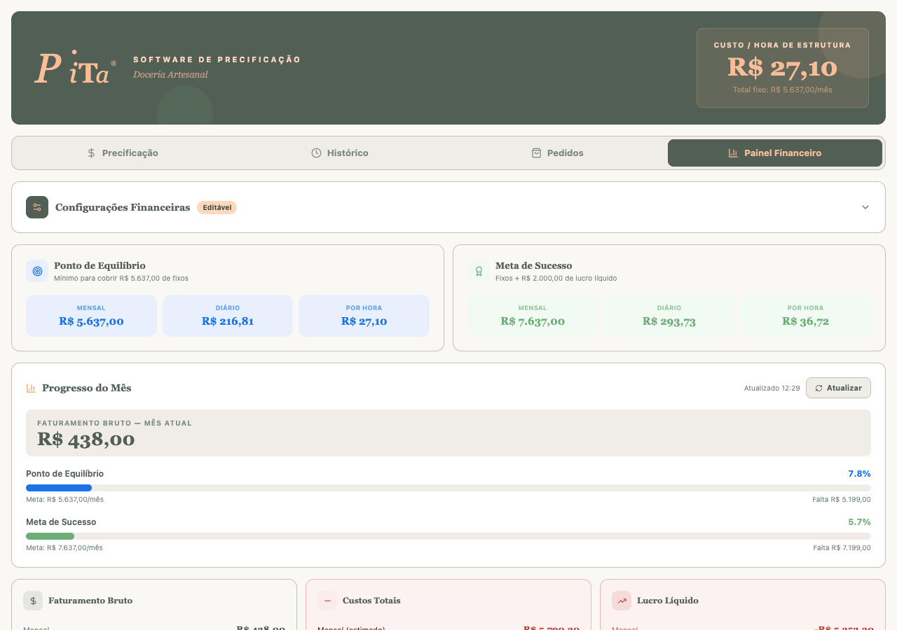
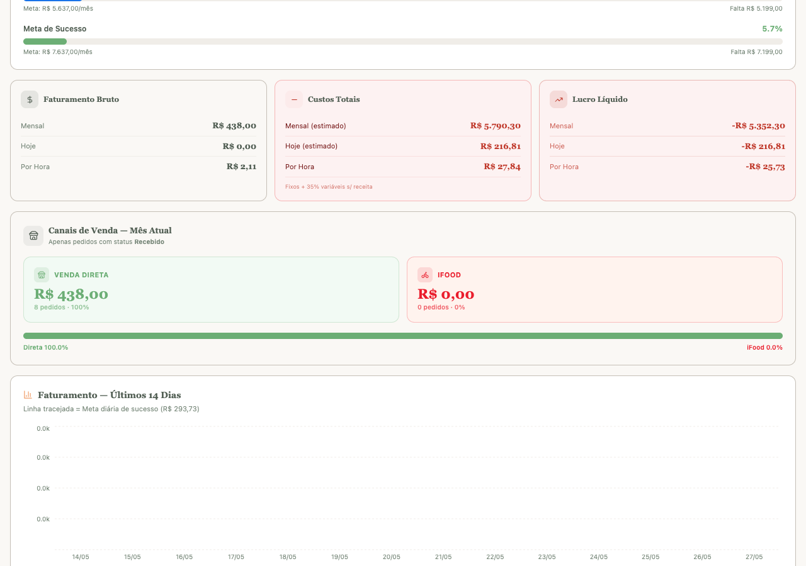

Calculado automaticamente a partir dos custos fixos. Mostra quanto custa cada hora de funcionamento da sua doceria.
Monte a receita, informe ingredientes e veja o preço sugerido instantaneamente.
Todas as precificações salvas, com margem, saúde financeira e canal de venda.
Registre pedidos de clientes com data de entrega, forma de pagamento e canal.
Acompanhe faturamento, ponto de equilíbrio, lucro líquido e metas do mês.
Painel lateral que decompõe o custo em Ingredientes, Embalagem e Estrutura em tempo real.

O painel expande e libera os campos de entrada. Clique novamente para recolher.
Informe o valor médio mensal das contas. Inclua também internet, gás ou qualquer outro custo recorrente.
Valor do aluguel do espaço de produção. Se trabalha em casa, calcule a proporção do espaço usado.
O quanto você quer receber por mês. Esse valor é incluído no custo de estrutura de cada produto.
Quantidade de horas que você trabalha por mês. Padrão: 208 h (8h/dia × 26 dias).

Defina o nome, quantas unidades a receita rende e o custo da embalagem (caixa, saquinho) por unidade.
Tempo total de produção em minutos. Junto com o custo/hora, gera o custo de estrutura por lote.
Clique para inserir uma nova linha na tabela. Preencha: nome do ingrediente, preço do pacote, peso/volume total do pacote e quantidade usada na receita.
Calculado automaticamente: (Preço Pacote ÷ Peso Total) × Qtd Usada. Aparece na última coluna de cada linha.
Atualizado em tempo real: mostra Preço Sugerido Ideal, Lucro Líquido/unid. e Margem Líquida Real com diagnóstico de saúde.
Barra verde no rodapé da tabela — soma todos os ingredientes do lote para conferência rápida.

Venda Direta / Balcão aplica 0% de taxa. iFood / Delivery aplica 25% de taxa de plataforma, ajustando o preço sugerido automaticamente.
Percentual mínimo de lucro que você quer sobre o preço de venda. Valor padrão: 30%.
Se emitir NF, informe o percentual de imposto. Deixe em 0 se não emitir.
Se já pratica um preço diferente do sugerido, informe aqui para calcular a margem real que está obtendo.
Salva todos os dados na nuvem (Supabase). O registro aparecerá na aba Histórico.
Pesquisa de mercado 2026 com preços médios praticados para produtos similares na sua região.

O histórico carrega do Supabase ao abrir a aba. Clique em Atualizar para buscar registros mais recentes.
Custo base é a soma de ingredientes + embalagem + estrutura por unidade. Preço final é o valor salvo no momento da precificação.
Saudável ≥ 25% · Alerta 11–24% · Perigosa < 11%
Indica se a precificação foi feita para Venda Direta ou iFood.
Abre o modal de edição completo. Permite corrigir ingredientes, preço final, canal e rendimento sem precisar refazer a precificação do zero.

Altere o nome ou troque entre Venda Direta e iFood. O cálculo de margem é refeito automaticamente.
Atualize quantas unidades a receita rende, o custo da embalagem por unidade e o tempo de preparo em minutos.
Edite cada linha diretamente. Use + Adicionar para novos ingredientes ou a lixeira para remover uma linha.
Atualiza o registro no banco de dados. A tabela do histórico é atualizada imediatamente na tela.
Registros antigos (salvos antes da atualização) mostram um aviso amarelo quando os ingredientes são carregados da receita atual. Revise antes de salvar.

Nome do cliente, WhatsApp, produto e preço unitário são obrigatórios. Os demais são opcionais mas recomendados.
Selecione no calendário. A data aparece na lista de pedidos para facilitar o controle de produção.
Pix, Dinheiro, Cartão ou outro. Canal indica se foi Venda Direta ou iFood — alimenta o Painel Financeiro.
Lista em tempo real de todos os pedidos. Clique no status para alterar (Recebido → Em produção → Pronto → Entregue).
Gera uma folha de pedido formatada para entregar à produção ou arquivar.
Remove o pedido permanentemente. Use apenas para cancelamentos. Esta ação não pode ser desfeita.

Valor mínimo que você precisa faturar para cobrir todos os custos fixos do mês. Mostrado mensal, diário e por hora.
Custos fixos + lucro desejado (configurável em Configurações Financeiras). É o valor que garante sua sustentabilidade.
Soma de todos os pedidos com status Recebido no mês atual. Atualizado ao clicar em Atualizar.
Mostram em % quanto do ponto de equilíbrio e da meta de sucesso você já atingiu no mês.
Três cartões abaixo das barras detalham os valores mensal, hoje e por hora. Custos são estimados com base na margem média das precificações.

Total faturado via venda direta/balcão, com contagem de pedidos e percentual do total.
Total faturado via iFood. A barra de proporção abaixo mostra visualmente o mix de canais do mês.
Proporção verde (Direta) × vermelho (iFood). Quanto mais verde, menor a dependência de plataforma e maior a margem.
Barras diárias de faturamento. A linha tracejada indica a meta diária de sucesso — dias acima da linha são saudáveis.